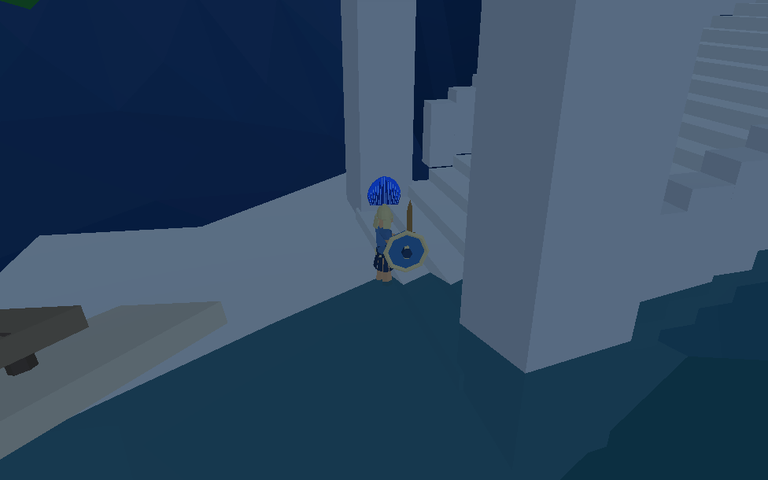
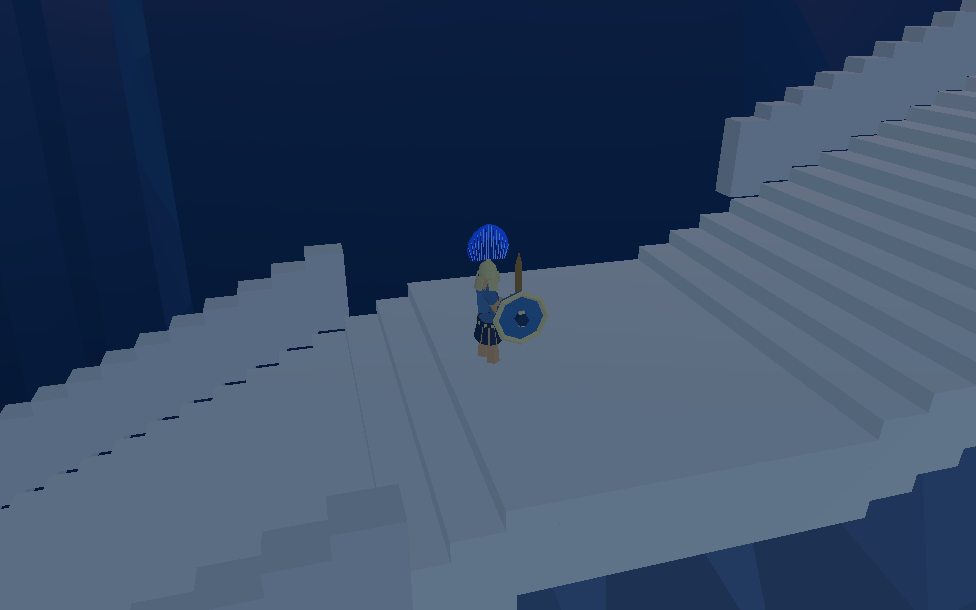
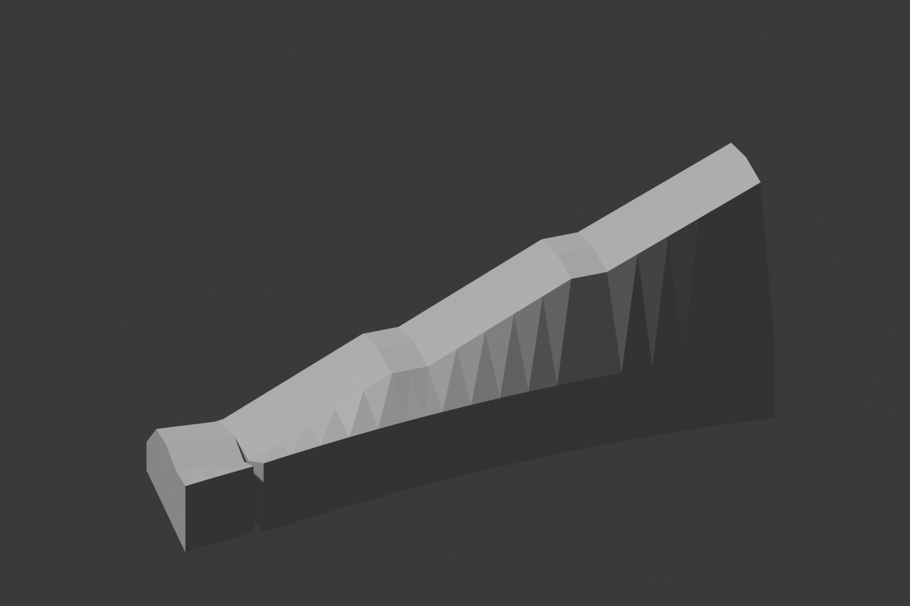
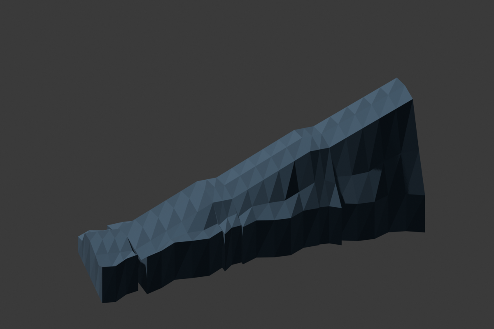

旧港保留原船、起重机、树木及搬运兵。三段阶梯顺坡连到旧城原入口；Blender 两轮岩体替换大块空白石墙，已接入 8931 原游戏并同步同一个 Godot 工程。
已验证：Web 三条通行线 1,473 个采样点没有缺口或头顶遮挡；原船实际按键上下船通过。Godot 原装备短剑兵通过生产按钮走完 90 段，340,576 次碰撞查询无阻挡。原有前港到广场路线仍通过。
尚未完成：Web 玩家整段人工游玩验收、运输装卸/自动出航、群体战斗与最终步态。整体建筑、临水层次及布光仍与认可目标有差距，默认布局未切换。
运行 8931 原游戏候选 · Web 通路检查 · Godot 实兵结果 · 导入对象及位置检查

当前仍缺少目标中的连续滨水建筑层次、细密植被及两城暖光分布；下方展示真实进度，不能视作已经复刻完成。


使用原装备模型；当前为保留刚性腿的风格化抬脚移动，尚不是最终步行动画。

岸门进入第一段阶梯

中段平台继续上城
R01 检查轮廓；R02 增加岩层转折与分面材质。最终 760 三角形、非流形边 0。两轮使用同一实测通路基准，原 .blend 及导出数据已保存在 assets。

